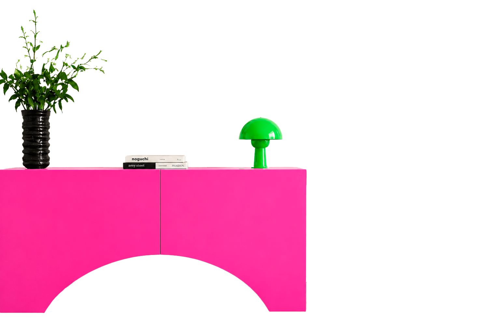
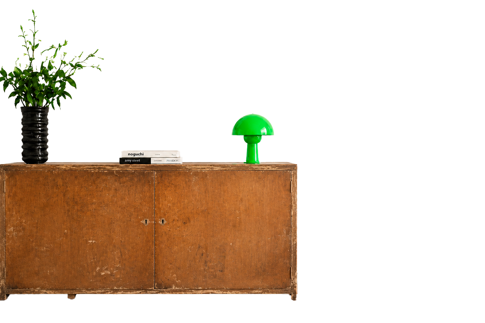
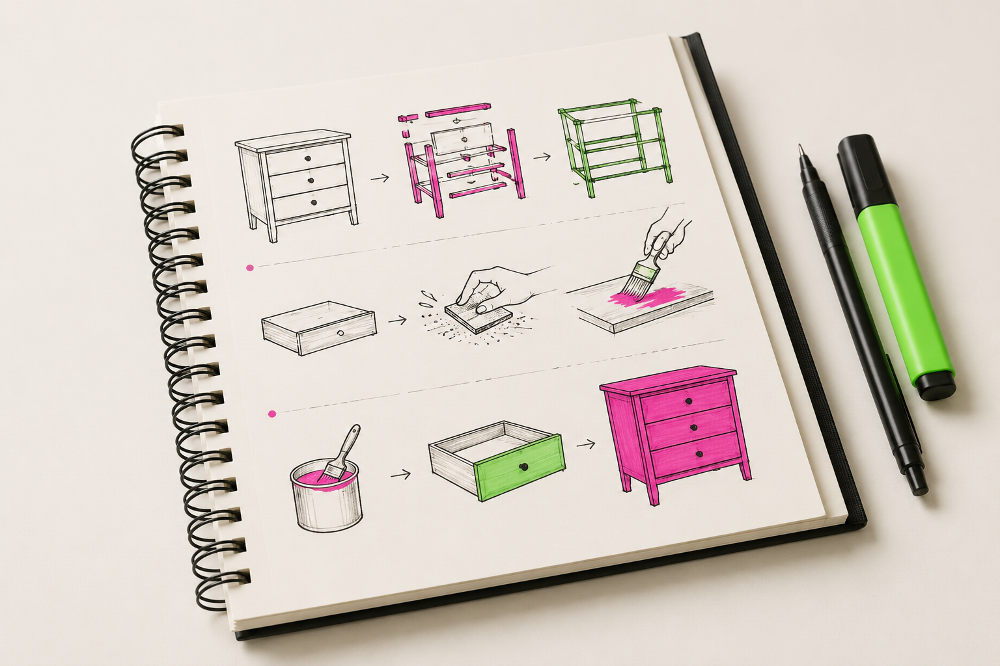
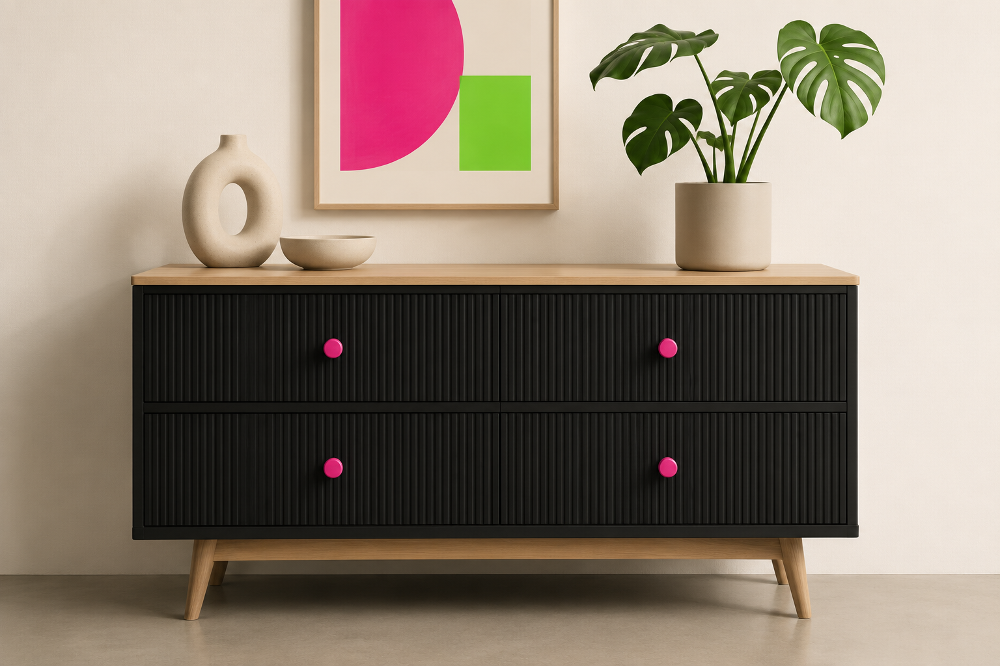
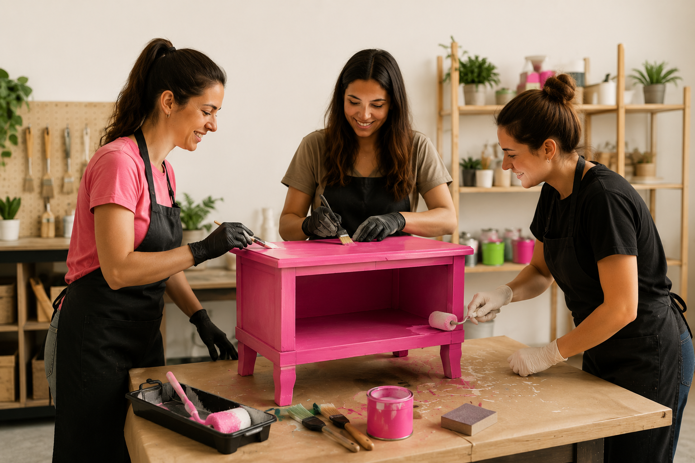

Restaurar muebles
ya no es suficiente
Restauración profesional,
no manualidades

Método
paso a paso

Enfoque en diseño
contemporáneo

Comunidad
y acompañamiento

El camino
del oficio
01 Diagnóstico y planificación
"Aprendé a leer un mueble antes de intervenirlo."
- Identificación de materiales y estilos.
- Evaluación de daños.
- Desarme seguro.
- Planificación del proceso de restauración.
- Herramientas profesionales.
02 Restauración estructural
"Devolvé estabilidad y funcionalidad a cualquier pieza."
- Reparación de estructuras.
- Encolados.
- Reemplazo de piezas.
- Corrección de imperfecciones.
- Preparación de superficies.
03 Diseño y terminaciones
"Transformá muebles con una estética contemporánea."
- Técnicas de pintura profesional.
- Combinación de colores.
- Acabados y protectores.
- Herrajes y detalles.
- Personalización de piezas.
04 Proyecto final y salida profesional
"Convertí tu aprendizaje en un trabajo de calidad."
- Restauración integral de un mueble.
- Organización del proceso.
- Presupuesto y costos.
- Presentación del trabajo.
- Cómo empezar a ofrecer tus servicios.
El cambio real no está en el contenido,
está en tu mirada
Antes del curso
- Restaurás por intuición y corrés riesgos
- Dudás al elegir los materiales adecuados
- No sabés cuánto cobrar tu mano de obra
Después del curso
- Restaurás cualquier mueble con autonomía técnica
- Elegís herramientas con criterio profesional
- Tenés un proceso metódico de punta a punta
Convertite en un restaurador de vanguardia
Sumate hoy al programa completo y accedé a todos los beneficios del sistema Raíz.
O en 3 cuotas fijas sin interés de $81.666
Dudas frecuentes
7 días
sin riesgos
Probá el curso completo. Si sentís que el nivel técnico o el acompañamiento no son lo que esperabas, te devolvemos el 100% de tu dinero. Sin vueltas.
¿Necesito herramientas caras?
No. Te enseñamos a restaurar con lo básico y a invertir inteligentemente solo cuando realmente es necesario.
¿Las clases son en vivo?
Todo el contenido está en HD y disponible 24/7. Además, tenés acceso a mentorías grupales de soporte para que nunca estés solo/a.
¿Tiene certificación profesional?
Sí, al finalizar los módulos y presentar tu proyecto, recibís nuestra certificación avalando tus competencias en el oficio.